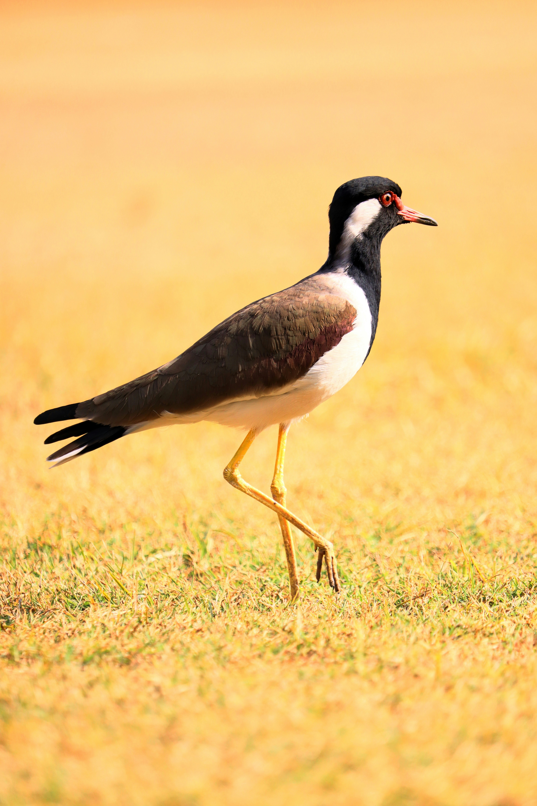

The Red-Wattled Lapwing is a large, conspicuous wader with a black head and breast, white underparts, brown wings, yellow legs, and a distinctive red fleshy wattle at the base of the bill. It is commonly found in open habitats near water but can also live far from wetlands. Its loud alarm call is one of the characteristic sounds of the Indian countryside, especially at night.